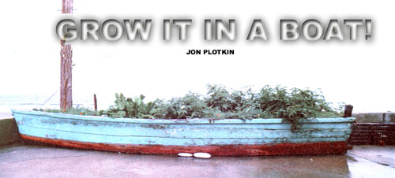
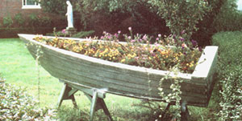

When I told the harbormaster that I wanted to buy the battered skiff that was resting - half buried in drifted sand - down by the pier, he looked at me with the pity an expert bestows on one who suffers from the affliction of ignorance.
"Buy it, be damned! " he exclaimed. "Just get it out of here, and it's yours!."
The captain was obviously delighted to be rid of the old derelict . . . and must have thought I was a fool to want a boat that would require gallons of caulk and months of work before it would float again.
He had no idea that an hour later the dilapidated vessel would be transformed into an attractive new planter nestled cozily in the corner of my front patio . . . or that - by the following autumn - I would be harvesting a bumper crop of cherry tomatoes, beets, and carrots from the recycled wreck.
SHIPS FOR SMALL SPACES
Whether your growing space is limited or not, using a discarded boat as a flower/vegetable bed offers several advantages: The plants' environment can be easily controlled . . . the unique planter can actually beautify your yard . . . and finally, such a recycled skiff allows one more piece of "junk" to find a useful existence.
But think before you plant! Make sure your dinghy is placed in the best possible position before you fill it full of soil. (It may sound as if I'd learned that bit of wisdom from sad experience, but I was lucky enough to pick a good spot for my boat-garden without giving the matter too much thought.)
Flat-bottomed skiffs are the easiest to deal with, of Course, as they don't require the supporting structures necessary to hold round or V-bottom barks upright. With the latter types, you must plan even more carefully: When the boat is already loaded down with dirt, you won't want to discover that your supports are insufficiently sturdy.
A YACHT-GARDEN TECHNIQUE
Each "small craft gardener" will no doubt develop a favorite recipe to produce the best conditions in his or her boat, but my "record" of two great growing seasons makes me confident enough to recommend my own "mix".
Fist-sized stones were first placed in the boat's bottom . . . to a depth of about one foot. The rocks were followed by a few inches of sand, a layer of manure (also several inches thick), and - finally - a layer of good topsoil. Some space (about four to six inches) was left between the top of the dirt and the gunwale of the boat . . . to prevent earth loss from wind and watering, and to allow sufficient room to add mulch.
I've found that the roots of plants in such a bed actually penetrate the sand and anchor themselves among the rocks. Then nutrients from the manure and mulches drain down easily to be absorbed by the vegetables or flowers. I was especially pleased that root crops, such as carrots (which had previously had a difficult time in my heavy soil), grew large and straight.
So the next time you see a small, shipwrecked craft that will never go to sea (or to the lake or river) again, you'll know what to do with it. Not only can you give a sad skiff a new purpose in life . . . but you'll be rewarded with a pretty planter overflowing with flowers and/or food.
|
 |
 |
|